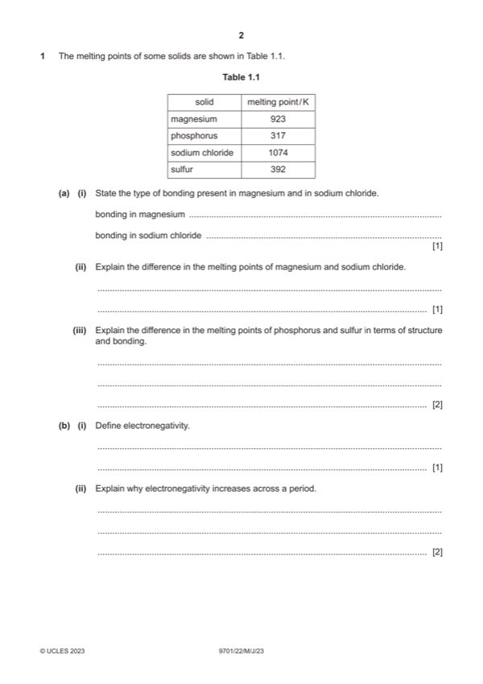

Question 1

Original paper page 2
Part 1(a)(i) — solution
bonding in magnesium – metallic AND bonding in sodium chloride – ionic 1
Mark points
- Include the ideas shown in the solution above.
Part 1(a)(ii) — solution
bonds in NaCl are stronger than bonds in Mg 1
Mark points
- Include the ideas shown in the solution above.
Part 1(a)(iii) — solution
- [M1] S8 / molecules of sulfur have more electrons (than P4 / molecules of phosphorus) 2
- [M2] S has stronger instantaneous dipole–induced dipole forces (than phosphorus / P)
Mark points
- [M1] S8 / molecules of sulfur have more electrons (than P4 / molecules of phosphorus) 2
- [M2] S has stronger instantaneous dipole–induced dipole forces (than phosphorus / P)
Part 1(b)(i) — solution
power of an atom to attract electrons to itself 1
Mark points
- Include the ideas shown in the solution above.
Part 1(b)(ii) — solution
Answer: OR bonding / outer / valence electron(s) are more strongly attracted to nucleus
- increase in nuclear charge
- similar shielding
- (so) increase in nuclear attraction for bonding / outer / valence electrons
Mark points
- increase in nuclear charge
- similar shielding
- (so) increase in nuclear attraction for bonding / outer / valence electrons
Part 1(b)(iii) — solution
hydrogen bond 1
Mark points
- Include the ideas shown in the solution above.
Part 1(b)(iv) — solution
- [M1] link shown as a dashed line between the lone pair of electrons from N of one NH3 to one H on other NH3 2
- [M2] minimum 3 correct partial charges (on adjacent atoms) over two NH3 molecules
Mark points
- [M1] link shown as a dashed line between the lone pair of electrons from N of one NH3 to one H on other NH3 2
- [M2] minimum 3 correct partial charges (on adjacent atoms) over two NH3 molecules
Part 1(b)(v) — solution
- [M1] O is more electronegative than N 2
- [M2] two H-bonds per water molecule : 1 per ammonia molecule
Mark points
- [M1] O is more electronegative than N 2
- [M2] two H-bonds per water molecule : 1 per ammonia molecule